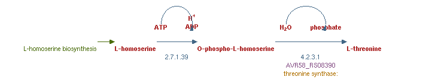

Antes de qualquer análise acerca deste organismo,
for realizada uma estudo sobre a nossa bacteria
Legionella pneumophila, no intuito de recolher alguma informação sobre o genes as respetivas vias metabólicas. Para tal, foi feita uma pesquisa, recorrendo ao PubMed e a BioCyc.
Foi realizado um script literatura.py que procura todos os artigos relacionados com estes organismo, na base de dados PubMed. Da execução deste processo, resulta o ficheiro res_lit.txt, que contém a informação que pretendemos.
De seguida está um excerto desse ficheiro de texto:
Descrição da bactéria
A Legionella pneumophila é uma bactéria intracelular facultativa que parasita protozoários em ambientes aquáticos e macrófagos alveolares em hospedeiros humanos suscetíveis. L. pneumophila sobrevive na natureza em virtude de um ciclo de diferenciação em que diferentes tipos de células se interconvertem em resposta a flutuações ambientais e metabólicas. Esta bactéria é responsável por causar uma doença respiratória denominada Legionelllosis. Por vezes este tipo de bactérias causa um tipo grave de pneumonia (infeção pulmonar), chamada de doença dos legionários, podendo também causar uma infeção menos grave (febre Pontiac), que tem os sintomas de um simples caso de gripe.
[1] [2]
Vias Metabolicas e respetivos genes
Uma via metabólica é uma série de reações químicas onde uma reação fornece o substrato da reação seguinte sendo a reação seguinte dependente da anterior.Desta forma, várias vias metabólicas formam uma rede metabólica.
Apartir do link do BioCyc fornecido no enunciado descobrimos que Legionella pneumophila Philadelphia-1 é a classe contém que caminhos de biossíntese do aminoácido L-threonine e de vários intermediários metabólicos.
Para a biossintese deste aminoácido temos duas instâncias, na primeira L-threonine biosynthesis o caminho da síntese de treonina a partir da homoserina é uma via de dois passos que converte a homoserina em treonina por meio de um intermediário fosforilado, em que temos apenas um gene como operador de caminho.

Figura 2 - Pathway: Biossíntese de L-treonina
Enquanto que para a segunda instância Superpathway da biossíntese de L-treonina o superpathway geral da biossíntese de treonina, como vamos mostrar embaixo, abrange todo o processo de conversão da molécula de metabolismo de energia central oxaloacetato em L-treonina em que temos oito genes operadores de caminho.
Figura 3 - Superpathway da biossíntese de L-treonina
Referências
[1] - van Heijnsbergen E, de Roda Husman AM, Lodder WJ, Bouwknegt M, Docters van Leeuwen AE, Bruin JP, Euser SM, den Boer JW, Schalk JA.
Viable Legionella pneumophila bacteria in natural soil and rainwater puddles.
J Appl Microbiol. 2014 Sep;117(3):882-90. doi: 10.1111/jam.12559. Epub 2014 Jun 26.
[2] - Structure of the WipA protein reveals a novel tyrosine protein phosphatase effector from Legionella pneumophila.
Pinotsis N, Waksman G.
J Biol Chem. 2017 Jun 2;292(22):9240-9251. doi: 10.1074/jbc.M117.781948. Epub 2017 Apr 7.